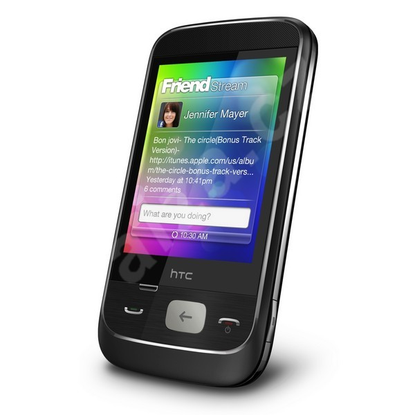
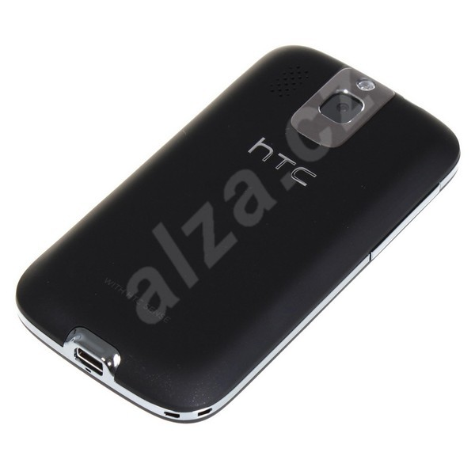
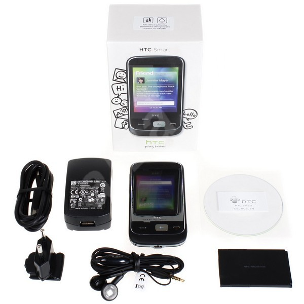

HTC Smart je cenově dostupný mobilní telefon s dotykovým displejem přinášející řadu užitečných funkcí a schopností. Ovládání probíhá z velké části přes dotykový displej s úhlopříčkou 2,8 palce, který je doplněn několika tlačítky na těle přístroje. Jedná se o jeden z prvních přístrojů vybavených operačním systémem Brew, který je speciálně určený do univerzálních přístrojů pro méně náročné uživatele. Mezi jeho výhody patří svižný chod, příjemné ovládání a dobrá aplikační výbava.
HTC navíc přináší i několik podob hlavní obrazovky, mezi kterými je možné přepínat. Mezi nabízené aplikace patří funkce pro organizaci času, internetový prohlížeč, e-mail, multimediální přehrávač, polohový senzor či FM rádio. Dnes již nemůže chybět digitální fotoaparát, zde má rozlišení tři megapixely a je doplněn i bleskem. Hodit se může 3,5 mm konektor pro připojení sluchátek a bezdrátové rozhraní Bluetooth. Pro připojení k počítači se využívá HTC ExtUSB konektor. Napájení má na starosti akumulátor s kapacitou 1100 mAh, který dodá přístroji dostatek energie pro více než 600 hodin v pohotovostním režimu nebo pro 7,5 hodiny hovoru.
Podporované sítě:
GSM 850/ 900/ 1800/ 1900 MHz WCDMA 2100 MHz
Procesor:
300 MHz
Paměť
ROM: 256 MB, RAM: 256 MB Slot pro paměťové karty microSDHC
Displej
TFT dotykový displej s úhlopříčkou 2,8 palce Rozlišení 240 x 320 bodů (QVGA)
Fotoaparát
3megapixelový fotoaparát s pevným ohniskem LED blesk, záznam videa
Další vlastnosti:
Internetový prohlížeč E-mailový klient Funkce pro organizaci času Hudební přehrávač (.aac, .amr, .qcp, .mid, .m4a, .mp3, .wma, .wav) Přehrávač videa (.mp4, .3gp, .3g2, .m4v) Polohový senzor FM rádio
Rozhraní:
Bluetooth 2.0 (EDR, A2DP) USB 2.0 (HTC ExtUSB) 3,5 mm audio jack
|
 zvětšit |
 zvětšit |
 zvětšit |